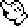
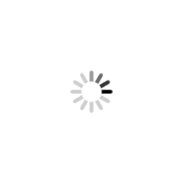

Listo para felicitar
NEKOS FEED
Cargando una escena brillante para Isa...
Mensaje del día

Radio anime
Anime Nexus en vivo para ponerle opening a la página.
FORO / ANIME / Y2K
Un rinconcito antiguo de internet para celebrar a Isa, también conocida como ragghy.
Usuario destacado
Isa / ragghy
Online desde el corazón
Update del foro
Isa / ragghy desbloqueó un tema con brillo, nostalgia y anime pixelado.



Cargando una escena brillante para Isa...
